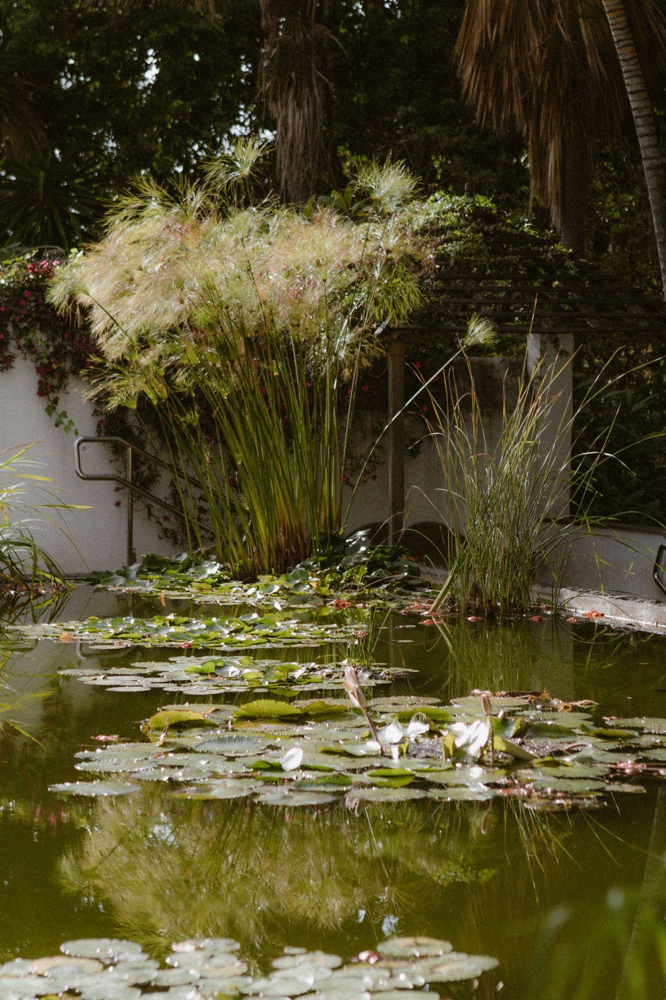

Une piscine naturelle familiale se situe entre 30 000 et 80 000 € TTC, soit environ 700 à 1 200 € par m² de plan d'eau, lagunage compris. Voici comment ce chiffre se décompose, ce qui le fait bouger, et ce qu'il faut prévoir en plus du bassin lui-même.

Première chose à comprendre : le prix au mètre carré porte sur la surface totale du plan d'eau, zone de nage plus zone de régénération. Un projet de 50 m² au total — 30 m² de baignade et 20 m² de lagunage — se chiffre donc autour de 35 000 à 60 000 € TTC selon le terrain et le niveau de finition. Un devis qui ne précise pas si le lagunage est inclus dans la surface annoncée n'est pas comparable à un autre : c'est la première question à poser.
Deuxième repère : le format compact. Un bassin de baignade de 20 à 25 m² au total, adapté aux jardins de ville, démarre autour de 20 000 €. Il fonctionne, mais demande une filtration mécanique plus présente et un suivi plus attentif, comme expliqué sur notre page piscine naturelle.
Fourchettes TTC indicatives, pose comprise, terrassement standard inclus, hors aménagements paysagers lourds et hors accès de chantier difficile.
| Surface totale du plan d'eau | Dont zone de nage | Prix moyen au m² | Budget TTC |
|---|---|---|---|
| 20 à 25 m² (compact) | 12 à 16 m² | 900 – 1 200 € | dès 20 000 € |
| 30 m² | 18 à 20 m² | 850 – 1 150 € | 26 000 – 34 000 € |
| 40 m² | 25 m² | 800 – 1 100 € | 32 000 – 44 000 € |
| 50 m² | 30 à 35 m² | 750 – 1 100 € | 38 000 – 55 000 € |
| 70 m² | 45 m² | 720 – 1 000 € | 50 000 – 70 000 € |
| 100 m² et plus | 60 m² et plus | 700 – 900 € | 65 000 – 80 000 € |
| Transformation d'une piscine existante | bassin conservé | — | 15 000 – 40 000 € |
| Entretien annuel par un professionnel | — | — | 500 – 1 500 €/an |
Obtenir mon tarif sur mesure Transformer ma piscine actuelle
Deux projets de surface identique peuvent afficher 25 000 € d'écart. Voici où se loge la différence, dans l'ordre de son poids sur le budget.
Le prix au m² baisse avec la taille : les frais fixes — amenée d'engins, local technique, pompe, étude — se diluent. Un bassin de 100 m² coûte proportionnellement moins cher qu'un bassin de 25 m².
De 3 000 à 12 000 €. Un sol argileux, rocheux ou une nappe haute font grimper la facture. L'évacuation des terres coûte cher si elles ne peuvent pas être réemployées en modelé dans le jardin.
Le poste le plus sous-estimé. Un passage inférieur à 2,50 m impose une mini-pelle et des rotations de brouettes : comptez + 30 à 50 % sur le terrassement, parfois davantage en terrain pentu.
Une membrane EPDM revient à 25 à 60 €/m² posée, avec géotextile. Une structure béton monte à 150 à 350 €/m² mais permet des angles droits, des margelles franches et une longévité supérieure.
Pompe basse consommation, skimmer, préfiltre, substrats de lagunage : 2 500 à 8 000 €. Les projets à faible ratio de lagunage exigent un équipement mécanique plus lourd, donc plus cher. Voir la page filtration.
C'est le poste le plus élastique : d'une berge enherbée quasi gratuite à une terrasse bois sur plots ou une pierre naturelle à 120 à 300 €/m². Le rendu final se joue là. Voir l'aménagement paysager.
Le septième poste, c'est la plantation : 800 à 3 000 € selon la surface de lagunage et la taille des sujets. Choisir de petits plants réduit la facture, au prix d'une ou deux saisons d'attente avant que la zone de régénération n'atteigne son plein rendement. Notre page plantes aquatiques détaille les espèces utiles.
Ces postes ne figurent pas systématiquement dans le chiffrage initial. Les intégrer dès le départ évite les mauvaises surprises en cours de chantier.
Étude de sol : 800 à 2 000 € — souvent facultative, indispensable en terrain instable ou en pente.
Déclaration préalable ou permis : gratuite en mairie, mais 500 à 1 500 € si vous confiez le dossier à un professionnel.
Remise en état des accès : 500 à 3 000 € pour reprendre une pelouse ou une allée abîmée par le passage des engins.
Local technique : 1 500 à 5 000 € s'il faut le construire, moins s'il s'intègre dans un abri de jardin existant.
Éclairage immergé et paysager : 600 à 3 000 € selon le nombre de points lumineux et la qualité du matériel.
Cascade ou ruisseau d'oxygénation : 1 500 à 6 000 €, un poste plaisir qui améliore aussi la circulation. Voir cascade & ruisseau.
Robot de fond adapté : 700 à 2 500 €.
Beaucoup d'articles promettent qu'une piscine naturelle finit par se rembourser. Le calcul honnête est plus nuancé : on supprime la chimie, mais on ajoute du végétal.
Chlore, brome, pH moins, anti-algues, floculant : 300 à 600 € par an économisés, ainsi que le stockage et la manipulation de produits.
Taille et division des plantes, gestion des sédiments, contrôle du lagunage : 500 à 1 500 € par an si l'on confie l'entretien à un professionnel.
L'électricité de circulation, 300 à 800 € par an, proche d'une piscine classique. Une pompe à vitesse variable réduit nettement ce poste.
Pas de liner à changer tous les 10-12 ans (1 500 à 4 000 €), pas de bâche ni de volet à remplacer. L'EPDM se donne 25 à 40 ans.
Bilan : sur dix ans, une piscine naturelle ne devient pas moins chère qu'une piscine chlorée, mais l'écart se resserre nettement. Son vrai bénéfice est ailleurs — une eau douce, aucun produit manipulé devant les enfants, et un jardin qui reste beau de novembre à mars alors qu'une piscine classique disparaît sous sa bâche. Notre calendrier d'entretien permet d'estimer précisément ce que vous ferez vous-même.
Dernière étape avant de consulter : savoir ce que vous pouvez financer, et transmettre au professionnel les informations qui rendent son chiffrage fiable.
Une piscine naturelle n'est pas un travail de rénovation énergétique : ni MaPrimeRénov', ni TVA réduite, ni éco-PTZ. Certaines collectivités aident la récupération d'eau de pluie ou la désimperméabilisation, ce qui peut toucher des postes annexes — à vérifier auprès de votre commune et de votre agence de l'eau.
Le financement passe par un prêt travaux classique. Autre levier, souvent plus efficace : le phasage. On réalise le bassin, le lagunage et une plage minimale la première année, puis la terrasse, l'éclairage et la cascade l'année suivante, en réservant les réseaux dès le départ.
Pour qu'un tarif ait du sens, le professionnel doit connaître la surface visée, la nature du sol, la largeur d'accès, le type d'étanchéité souhaité et le niveau de finition des plages. Deux minutes de description valent mieux qu'une visite à l'aveugle.
Demander mon devis gratuit →Pensez aussi au volet administratif, qui peut décaler le calendrier de plusieurs semaines : en règle générale, aucune formalité en dessous de 10 m², déclaration préalable de travaux entre 10 et 100 m², permis de construire au-delà de 100 m² — règles à confirmer auprès de votre mairie, le PLU pouvant ajouter des contraintes. Détails sur notre page réglementation & déclaration.
Chiffrer mon projet gratuitement Voir les bassins d'agrément
Un chiffrage détaillé sous 24 h ouvrées, gratuit et sans engagement.